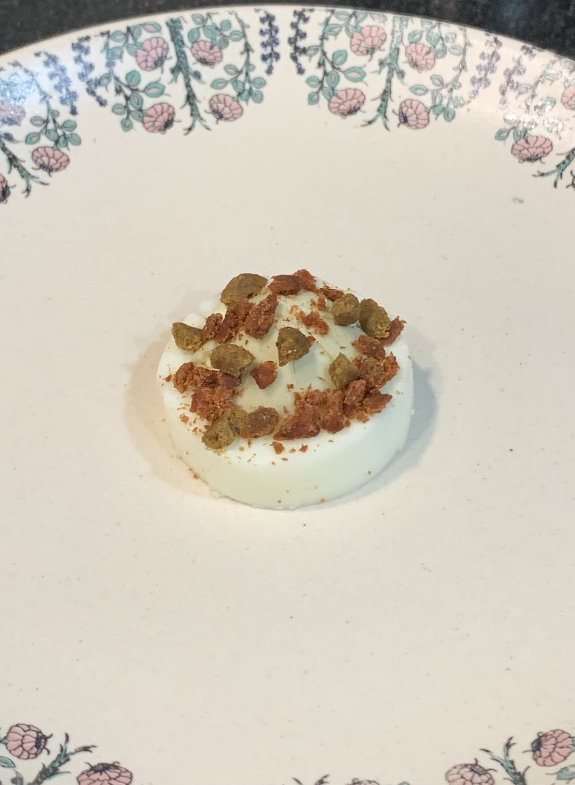
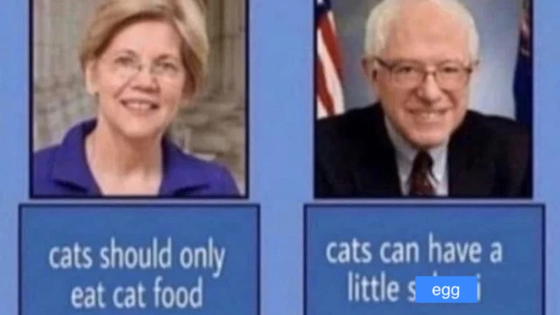

Birthday Cake for Cats

Lil birthday cake made for Gobu, presented on his now broken plate
If you have a cat, then you are awesome. If you love your cat, which you obviously do, you would want to make cakes for you cat on thier birthday. If I have managed to describe you perfectly, you have landed on the right page. Allow me to explain how to make the perfect birthday cake for your goblin.
Ingredients
- One boiled egg
- Cat treats (any cat treats would do, but make sure you confirm with your cat what it's favourite treats are
- Some kibble for cats
- Love
Steps
- Boil the egg for 10 minutes, which will give you a hard boiled egg
- Slice the hard boiled egg to get the middle portion out
- Place the sliced egg in the middle of the plate, and let it cool down
- Crush up your cats favourite treats, and sprinkle them on top of the sliced egg
- Add some extra cat food favoured by your cat for a wholesome dining experience for your cat
- Place the plate on a clean table, and place your camera in front of the plate
- Record the plate as your goblin cat runs out of its room and towards the plate and digs in
That's it, your cat's birthday cake is done!
Note: Some people say that egg is not good for cats, which we agree with. However, a little egg once in a while will not hurt your cat, as explained by the experts below.

![a two part
image macro, with the first part showing the image of a body builder sitting
infront of a laptop with the text 'Cats are expert hunters and have a keen sense
of smell, especially in the case of egg... your cat should be just fine with a
couple pieces of egg as a treat' and the second image is the picture of a famous
meme cat with the text 'brother i should be fine with just a couple pieces of egg
as a treat'. there's a bowl with eggs digitally drawn in front of the cat, as it
stares at the bowl.](./img/cat_egg_expert.jpg)
Home